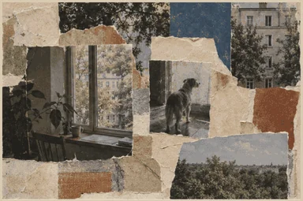
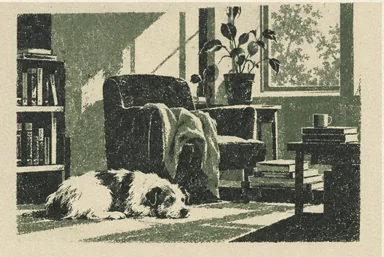
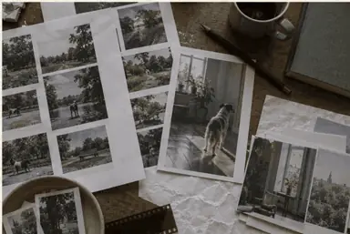

A developing collection of visual stories that bring a little warmth to the digital world. Before the stories take shape, these four directions explore how they might look: the same quiet world, a dog, a sunlit window, and a room full of plants, carried through four different materials.

Pencil sketchbook
A dog, a chair, and a window, drawn in soft graphite across two sketchbook pages.

Torn-paper collage
Torn paper, photographs, and swatches of color layered around a dog watching from the window.

Textured print
A dog asleep in a reading room, printed in sage and charcoal.

Photographic project board
Contact sheets and prints spread across a working table, with the dog at the window again.
The collection is still in development. Follow along in the studio log, or talk about the work on LinkedIn.